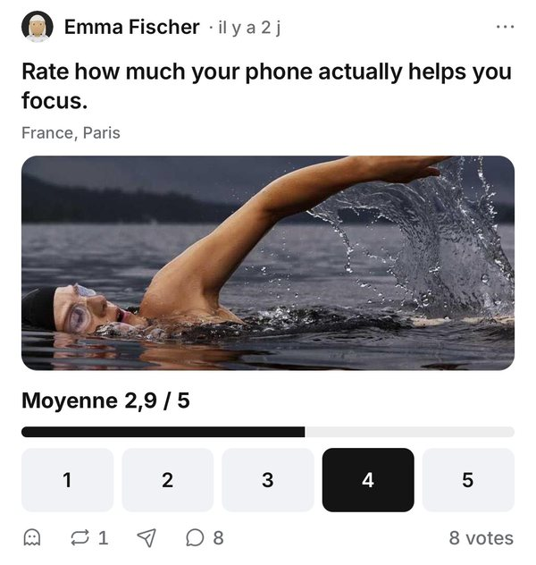
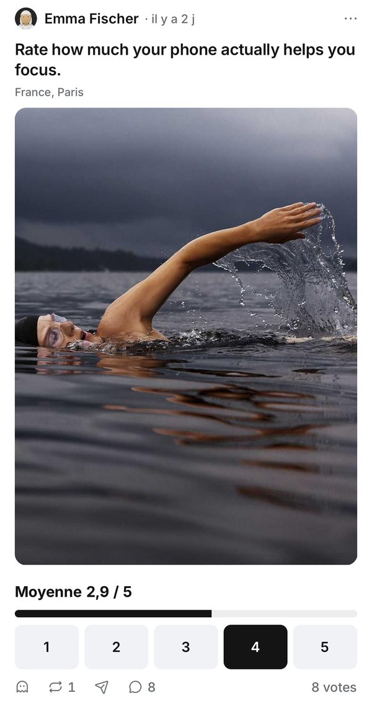

Trois choix pour ton tour
Pour chaque choix : ce que fait Take aujourd’hui (marqué), les deux options côte à côte, et les sources. Tout part de vraies captures de Take, retouchées. Les vidéos se lancent seules.
1. La photo dans le fil
Une photo dans un take : on la coupe en bandeau, ou on la montre entière ?
Bandeau recadré Aujourd’hui

La photo est coupée en bande. Pour placer la bande, le téléphone cherche la partie la plus détaillée de chaque photo, pendant qu’on fait défiler. C’est une des causes du lag.
Si on garde le bandeau, on peut faire cette recherche à l’envoi, sur le serveur, comme X l’a fait en 2018.
Photo entière dans son format

La photo garde le format où elle a été prise (ici 3:4). Rien à mesurer. Elle prend plus de place à l’écran.
Comme Instagram (photos 3:4 telles quelles depuis mai 2025) et X (images 16:9 et 4:3 en entier depuis mai 2021 ; les très hautes restent coupées au centre).
Glisse pour voir l’autre option.
- Social Media Today, 28/05/2025 : « when you upload a 3:4 image it’ll now appear exactly as you shot it ».
- 9to5Mac, 29/05/2025 : avant, Instagram montait à 4:5 au plus haut.
- TechCrunch, 05/05/2021 : « standard aspect ratio images (16:9 and 4:3) will now display in full without any cropping ».
- Twitter Engineering, 2018 : le cadrage était calculé à l’envoi, sur le serveur.
2. L’onglet vide du profil
L’en-tête est replié, et on passe sur un onglet vide (ici Questions) : il reste replié, ou il redescend ?
Il reste replié, comme Instagram Aujourd’hui
La page garde sa place, et le message de l’onglet vide s’affiche sous les onglets.
Il redescend, comme X
La page n’a rien à faire défiler, donc l’en-tête revient.
Glisse pour voir l’autre option.
Ta règle du 2 octobre (garder l’en-tête et la position de chaque onglet, comme Instagram) va dans le sens de l’option de gauche.
- Pas de documentation officielle d’Instagram ni de X trouvée.
- Une bibliothèque qui reproduit « the Instagram / Twitter profile layout » décrit les deux : par défaut, un onglet trop court replie l’en-tête quand même ; « the Twitter-style alternative » le fait redescendre (« the header instead eases back »).
3. Le toucher d’un onglet du profil
On touche un onglet du profil : la page change d’un coup, ou elle glisse ?
Saut direct Aujourd’hui
La page change d’un coup, depuis le 2 octobre (#3312). Avec le glissement, iOS laissait parfois tomber un toucher rapide, et l’écran restait sur le mauvais onglet.
Glissement
Les pages glissent jusqu’à l’onglet touché, comme quand on les fait glisser au doigt. Il faudrait d’abord régler la perte de touchers.
Glisse pour voir l’autre option.
- Aucune source écrite trouvée sur ce que font Instagram et X au toucher d’un onglet du profil (recherches du 2 octobre, déjà vides pour #3273 et #3312).
- Dans les deux apps, comme sur Take, on peut aussi passer d’un onglet à l’autre en faisant glisser au doigt (une bibliothèque qui reproduit les profils d’Instagram et de X décrit un « swipeable pager »). Sur Take, ce glissé reste animé.
- Le plus simple pour trancher : toucher les onglets d’un profil sur Instagram et sur X, sur ton téléphone.